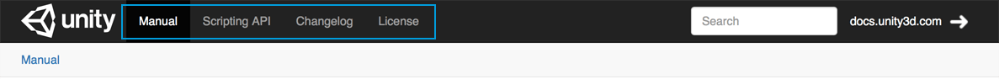
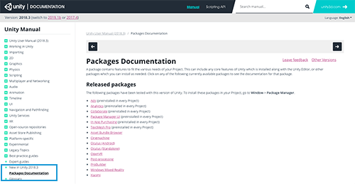
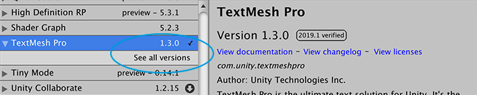
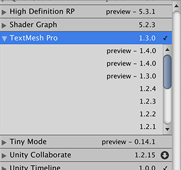
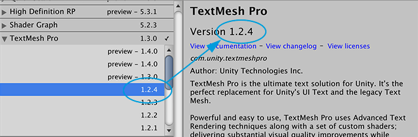
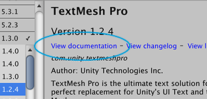

The Unity Manual provides documentation for a specific version of Unity. Each package has its own version, so each package provides documentation for a specific version of that package. For this reason, the package documentation isn’t part of the main Unity Manual documentation; instead, documentation for each package lives on its own micro-site on Unity’s documentation server.
To access the documentation for a specific package, you have two options:
When the package page opens, you can see four links at the top of the page.

Unity’s Package documentation menu bar
To switch back and forth between the Manual documentation, the Scripting API documentation, the Changelog, and the License information for this package, click the corresponding link at the top of the page.
Getting documentation for the latest version
Each version of the Unity Manual documentation provides a list of verified and preview packages, a list of built-in packagesBuilt-in packages allow users to toggle Unity features on or off through the Package Manager. Enabling or disabling a package reduces the run-time build size. For example, most Projects don’t use the legacy Particle System. By removing the abstracted package of this feature, the related code and resources are not part of the final built product. Typically, these packages contain only the package manifest and are bundled with Unity (rather than available on the package registry). See in Glossary, and a list of keywords with links to the matching package documentation which you can use with that version of Unity:

Unity packages list
Note: Only packages that are compatible with the version of Unity matching the documentation appear in these lists.
You can click the link in the list to open the latest version of that package documentation, where latest means the highest version generated. If you can’t find the package you want in this list, there might be several reasons:
It isn’t released for this version of Unity.
It is a preview package. The packages list includes only a limited number of preview packagesA preview package is in development and not yet ready for production. A package in preview might be at any stage of development, from the initial stages to near completion. See in Glossary.
It is a private package. Some packages are not available to everyone because someone outside of Unity is developing them or because they are under a special license.
You might be able to access the documentation through the Package Manager window for packages released in another version of Unity. In the case of private packages, try to contact the developer directly to request access.
Getting documentation for a specific package version
You can find out more about a package by viewing its documentation, changelog, or license information.
To access any of these pages, you can click the View documentation, View changelog, or View licenses links from inside the Package Manager window.
To access the documentation for a specific package version:
If you are looking for a preview package, select Show preview packages from the Advanced drop-down menu.
Show preview packages
Select the package you want information for from the list on the left.
Expand the arrow to the left of the package in the list.
A new row appears, displaying the See all versions link.

See all versions
Click the See all versions link.
A scrollable list appears with all available versions.

All available versions
Click on another version to select it.
The package details appear in the pane on the right.

Select a version to see its details
Notice the verified tag no longer appears in this example because version 1.2.4 of the TextMesh Pro package is not verified for Unity version 2019.1.
Click the View documentation link to open the documentation for the selected version of the package.

View documentation
NOTE: If you are offline when you click the View documentation link and the package is on your computer (that is, embedded or installed from a local folder), the Package Manager opens the first MD file it finds under the <package-root-folder>/Documentation~ folder in your default MD viewer. If the Package Manager installed the package from a server (that is, from a package registry server or a Git remote repository), the following message appears instead:
This package does not contain offline documentation
You can follow this procedure for any version of any package. Note that the documentation is not necessarily different for each package version release, since some version updates (patches) involve only bug fixes or trivial changes.
Did you find this page useful? Please give it a rating:
Is something described here not working as you expect it to? It might be a Known Issue. Please check with the Issue Tracker at issuetracker.unity3d.com.
Thanks for letting us know! This page has been marked for review based on your feedback.
If you have time, you can provide more information to help us fix the problem faster.
You've told us this page needs code samples. If you'd like to help us further, you could provide a code sample, or tell us about what kind of code sample you'd like to see:
You've told us there are code samples on this page which don't work. If you know how to fix it, or have something better we could use instead, please let us know:
You've told us there is information missing from this page. Please tell us more about what's missing:
You've told us there is incorrect information on this page. If you know what we should change to make it correct, please tell us:
You've told us this page has unclear or confusing information. Please tell us more about what you found unclear or confusing, or let us know how we could make it clearer:
You've told us there is a spelling or grammar error on this page. Please tell us what's wrong:
You've told us this page has a problem. Please tell us more about what's wrong:
Thanks for helping to make the Unity documentation better!